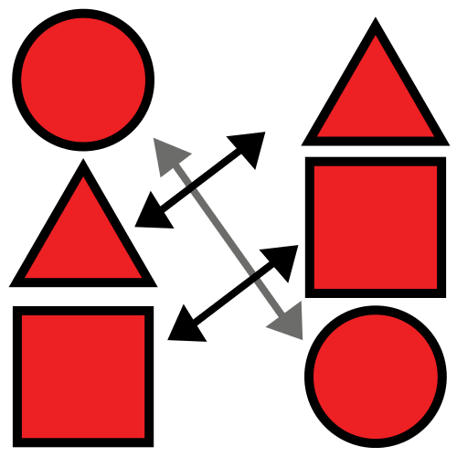
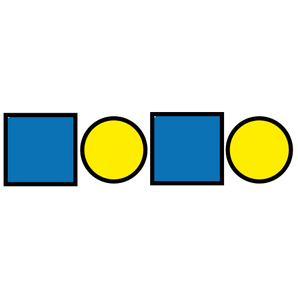
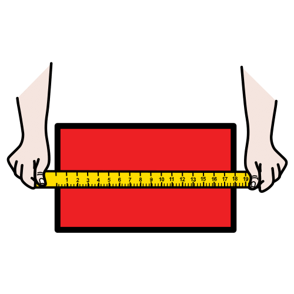
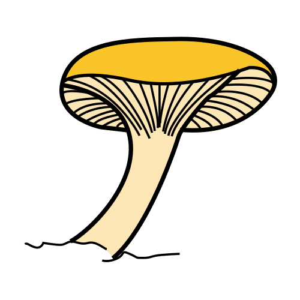
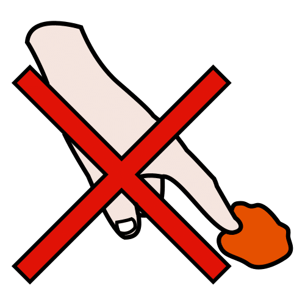

Estaciones de aprendizaje · Infantil · 6 estaciones
Estaciones
de matemáticas
de otoño
Seis mesas para aprender matemáticas con castañas, bellotas, hojas y piñas.
Con el Diseño Universal para el Aprendizaje (DUA) y actividades en tres niveles.
Pictogramas: Sergio Palao. ARASAAC (Gobierno de Aragón). CC BY-NC-SA.
Licencia CC BY-NC-SA 4.0
ideducando.es
Con versiónsegurasin piezas
pequeñas
De un vistazo · Segundo ciclo de Infantil
Estaciones de matemáticas de otoño
Seis estaciones de matemáticas manipulativas con elementos de otoño. Cada una trabaja una idea del currículo en tres
niveles, con piezas de verdad o con fichas seguras.
-
Para quiénToda la clase, de 3 a 6 años, y el pequeño grupo de Pedagogía Terapéutica (PT) y Audición y
Lenguaje (AL). Con la versión segura, también antes de los 3.
-
Cuánto duraDe 10 a 15 minutos por estación. Las seis en rotación, mejor en dos días, o una estación al
día. Se repiten todo el otoño.
-
Cómo se evalúaObservando lo que hace cada niño o niña, con el registro (página 28), y con su
autoevaluación (página 29).
Qué van a aprender
- Contar colecciones de hasta 3, 6 o 10 piezas y unirlas con su número.
- Poner cada pieza en su silueta, una a una, y decir si sobra o falta alguna.
- Continuar series de dos y de tres elementos y encontrar la pieza que falta.
- Clasificar por tipo, por color o por dos criterios a la vez, y decir el criterio.
- Ordenar por tamaño y medir con piezas iguales, usando «más grande que» y «más larga que».
Las seis estaciones
 1 · ¿Cuántos hay?Cantidad y número
1 · ¿Cuántos hay?Cantidad y número
2 · Cada uno con su parejaCorrespondencia uno a uno
3 · Series de otoñoPatrones 4 · ¿Dónde va?Clasificación
4 · ¿Dónde va?Clasificación- 5 · De pequeño a grandeOrden por tamaño y comparación

6 · ¿Cuánto mide?Medida con objetos
Tres niveles en cada estación
Misma meta y actividad para todos. El nivel describe la tarea, no al niño o la niña.
- 1Con más apoyo: pocas piezas y modelo del adulto.
- 2Base: lo que se espera para la edad.
- 3Con más reto: más piezas, explicar o inventar.
Dos versiones de material
De otoño Castañas, bellotas, piñas pequeñas y hojas secas de verdad. Desde los 3
años, nunca con quien se lleva cosas a la boca y con un adulto en la mesa.
Segura Fichas plastificadas de unos 5 cm con los mismos dibujos. Para menores
de 3 años, para quien se lleva cosas a la boca y si hay alergias o celiaquía.
CurrículoMurcia196/2022
Sello de currículo: lo que trabaja del Decreto 196/2022
Criterios de evaluación del segundo ciclo
-
DEE 1.1 «Establecer distintas relaciones entre los objetos a partir de sus cualidades
o atributos, mostrando curiosidad e interés». Estaciones 2 a 5.
-
DEE 1.2 «Emplear los cuantificadores básicos más significativos en el contexto del
juego y en la interacción con los demás». Estaciones 1 y 2.
-
DEE 1.4 «Identificar las situaciones cotidianas en las que es preciso medir, utilizando
el cuerpo u otros materiales y herramientas para efectuar las medidas». Estación 6.
-
CA 1.3 «Manejar diferentes objetos, útiles y herramientas en situaciones de juego y en
la realización de tareas cotidianas, mostrando un control progresivo y de coordinación de movimientos de carácter
fino». Todas.
DEE: Descubrimiento y Exploración del Entorno. CA: Crecimiento en Armonía. Texto literal del Decreto 196/2022,
Boletín Oficial de la Región de Murcia (BORM) n.º 255, de 4 de noviembre de 2022: DEE, págs. 33094 a 33097; CA,
págs. 33083 a 33086.
Saberes básicos DEE-A
- «Cualidades o atributos de objetos y materiales. Relaciones de orden, correspondencia, clasificación y comparación». 2 a 5.
- «Discriminación de algunos atributos de objetos y materias: color, forma, función... Percepción de semejanzas y diferencias entre los objetos». 3 y 4.
- «Identificación de cualidades (tamaño, cantidad...) y sus grados (pocos, muchos, pequeño, mediano, grande...)». 1 y 5.
- «Cuantificadores básicos contextualizados: muchos-pocos, unos-algunos- varios, más que-menos que, todos-ninguno...». 1 y 2.
- «Funcionalidad de los números en la vida cotidiana». 1 y 6. «Clasificación de elementos. Relaciones de pertenencia y no pertenencia». 4.
- «Situaciones en que se hace necesario medir. Diferentes herramientas de medida convencionales (regla, metro, balanzas, recipientes...) y no convencionales (pasos, pies, cuerdas, piedras...)». 6.
Seguridad y material
Qué lleva cada estación, en sus dos versiones
Las dos versiones sirven para lo mismo. Si alguien necesita la segura, úsala con todo el grupo: así nadie trabaja con un
material distinto delante de los demás.
| Estación |
Versión de otoño |
Versión segura: fichas de las páginas 23 a 26 |
| 1 · ¿Cuántos hay? |
10 castañas, bellotas o macarrones en un cuenco. |
10 fichas de castaña. |
| 2 · Cada uno con su pareja |
1 3 castañas. 2 3 hojas pequeñas y 3 bellotas. 3 2 hojas grandes y 2 pequeñas, 2 castañas grandes y 2 pequeñas, 1 piña grande y 1 pequeña. |
19 fichas: las mismas piezas. En las fichas «pequeñas», el dibujo es pequeño. |
| 3 · Series de otoño |
4 hojas pequeñas, 3 castañas, 3 bellotas y 2 piñas pequeñas, y más para seguir la serie en la mesa. |
12 fichas: 4 hojas rojas, 3 castañas, 3 bellotas y 2 piñas. |
| 4 · ¿Dónde va? |
5 cuencos o aros. 1 3 hojas y 3 castañas. 2 9 hojas secas: 3 rojas, 3 amarillas y 3 marrones. 3 2 hojas grandes, 2 pequeñas, 2 castañas grandes y 2 pequeñas. |
23 fichas: las mismas piezas. También sirven hojas de verdad, secas y plastificadas. |
| 5 · De pequeño a grande |
5 calabacitas, 5 piñas o 5 hojas de tamaños bien distintos. |
Las 5 calabazas de papel de la página 18, que sirven en las dos versiones. |
| 6 · ¿Cuánto mide? |
Para medir hacen falta piezas iguales: en las dos versiones, las 10 fichas de bellota. Las castañas de verdad no son iguales. |
Aviso de seguridad: léelo antes de empezar
-
Piezas pequeñas. Castañas, bellotas, piñas pequeñas y pasta pueden provocar un atragantamiento. La ley
pide que los juguetes para menores de 3 años no tengan piezas que se puedan tragar (Real Decreto
1205/2011, anexo II), y la norma de juguetes UNE-EN 71-1 las comprueba con un cilindro de 31,7 mm de diámetro: las
bellotas, la pasta y muchas castañas caben en él. La Asociación Española de Pediatría (AEP) recuerda que los objetos
redondos y lisos son los de más riesgo y que la mejor prevención es la supervisión constante (AEP,
2024).
-
Por eso, la versión de otoño: solo a partir de 3 años, nunca con quien todavía se lleva cosas a la
boca y con un adulto sentado en la mesa todo el rato. Si no puede estar, versión segura. La AEP aconseja intentar evitar
las piezas pequeñas en menores de 3 a 5 años: en la clase de 3 años, empieza por la versión segura. Las fichas miden unos
5 cm y no caben en ese cilindro. No usamos botones: la AEP pide no dejar a los niños jugar con ellos.
-
Frutos secos y alergias. Castañas y bellotas son solo para tocar, nunca para comer. Antes, pregunta a
las familias por alergias: la reacción puede llegar por comer el alimento, por tocarlo e incluso por olerlo
(Ibáñez Sandín, En Familia, AEP).
-
Pasta y celiaquía. La pasta de trigo lleva gluten (En Familia, AEP). Con
alumnado celíaco, usa la versión segura.
-
Lo que recogemos. Hojas, castañas y piñas, lavadas, bien secas y sin moho. Cuidado con el castaño de
Indias: sus semillas se confunden con las castañas y son tóxicas si se comen
(Poison Control).
-
Setas: solo dibujadas. Nunca se recogen del campo: algunas causan intoxicaciones graves
(Benítez-Macías y otros, 2009). Ante cualquier duda, llama al Servicio de Información
Toxicológica: 91 562 04 20, las 24 horas. Si le cuesta respirar, al 112.
-
Manos y fichas. Al terminar, todos a lavarse las manos con agua y jabón, unos 20 segundos
(En Familia, AEP). Revisa las fichas: si alguna se despega o se rompe, retírala.
Todas las fuentes, completas, en la página 32.
Cómo organizarlas
Los grupos rotan y el adulto se sienta donde más falta hace
 Rotación
Rotación
Pon cada estación en una mesa, con su tarjeta de pasos (página 21). Haz grupos de 4 o 5, con niños y niñas de ritmos
distintos. Cada grupo empieza en una estación y, al oír la señal, pasa a la siguiente: de la 1 a la 2, y de la 6 a la 1.
Hacer las seis en un día cansa: mejor tres cada día, o una estación al día como rincón.
Antes de empezar
Presenta las estaciones en la asamblea, una o dos cada día. Enseña el material, juega tú delante y practicad juntos la
tarjeta de pasos. Anticipa la rotación con la
agenda visual de IdEducando.
Señal de cambio
Temporizador visual o reloj de arena a la vista, de 10 a 15 minutos. Un minuto antes, avisa: «Recogemos». Después, una
señal que se vea y se oiga, como una luz y una canción corta. El cambio de mesa puede ser una
pausa activa.
Papel del adulto
Siéntate en la estación con piezas de verdad o en la más nueva para el grupo. Pon palabras a lo que hacen, usa las
preguntas de cada estación, sube o baja el nivel y anota en el registro (página 28). Si hay otro adulto, como la maestra
de PT o de AL, que se siente en otra. Las demás funcionan solas, con la versión segura y la tarjeta de pasos.
Los tres niveles en la mesa
Cada estación tiene tres sobres, uno por nivel, con su marca: círculo 1, cuadrado
2 y rombo 3. Cada niño o niña empieza donde lo ves tú y sube o
baja en la misma sesión. En el registro anotas el nivel en que lo logra.
Tarjeta de pasos y panel
La tarjeta de cada mesa dice siempre lo mismo: mira la tarjeta, hazlo, comprueba y recoge. En el panel de rotación
(página 22), la tarjeta de cada grupo, con los nombres escritos, se pega con velcro debajo de su estación y avanza una
casilla tras cada señal.
 Cierre en asamblea
Cierre en asamblea
Cinco minutos: «¿Qué estación os ha gustado? ¿Qué habéis descubierto?». Enseñad una serie o un tablero terminado. Una
vez por semana, la autoevaluación (página 29). Al terminar, todos a lavarse las manos.
Lo que dice la investigación: el adulto marca la diferencia
Un metaanálisis de 55 estudios comparó enseñar matemáticas con objetos manipulables y enseñarlas solo con símbolos. Los
objetos mejoraron el aprendizaje, con un efecto de pequeño a moderado, mayor cuando el adulto guiaba la actividad. En los
estudios con niños y niñas de 3 a 6 años el efecto fue más pequeño y desigual (Carbonneau, Marley y Selig, 2013). Por eso,
aquí las piezas siempre van unidas a un número o a una pregunta del adulto, y cada estación trae preguntas que ayudan.
El Diseño Universal para el Aprendizaje (DUA) en estas estaciones
Cada número es una pauta (en la versión 3.0, «directriz») de CAST (2024):
- 7.3 Fomentar la alegría y el juego: el otoño y las piezas de verdad convierten la tarea en juego.
- 8.2 Optimizar los desafíos y el apoyo: tres niveles en cada estación, y se puede subir o bajar.
- 2.5 Ilustrar a través de múltiples medios: la misma idea con piezas, dibujos, pictogramas, números y palabras.
- 4.1 Variar y valorar los métodos de respuesta, navegación y movimiento: poner, señalar, decir o apuntar valen igual.
- 6.4 Ampliar la capacidad para dar seguimiento al progreso: la tira de comprobar, la tarjeta de pasos y la autoevaluación.
Para qué: contar piezas y unir cada cantidad con su número. El número sirve para algo: saber cuántas
castañas hay que poner.
DEE 1.2 «Emplear los cuantificadores básicos más significativos en el contexto del juego y en la interacción con los demás».
DEE-A «Funcionalidad de los números en la vida cotidiana». «Cuantificadores básicos contextualizados: muchos-pocos, unos-algunos- varios, más que-menos que, todos-ninguno...».
Versión de otoño
10 castañas, bellotas o macarrones, en un cuenco.
Versión segura
10 fichas de castaña (página 23).
Imprimibles: tarjetas de los niveles 1 y 2 (página 7), tarjetas del nivel 3 y tira de comprobar (página 8).

Castañas, bellotas y macarrones son piezas pequeñas y no se comen: úsalas solo con un adulto en la mesa. Si no puede estar o hay alumnado celíaco, fichas.
Cómo se juega
- Pon en el centro el cuenco con las piezas y, boca abajo, las tarjetas de cada nivel.
- Cada niño o niña da la vuelta a una tarjeta y dice el número. Si no lo sabe, lo decís juntos.
- Pone delante tantas piezas como pide la tarjeta, una a una, contando en voz alta.
- Comprueba: toca cada pieza y cuenta otra vez. En el nivel 3, con la tira de comprobar.
- Devuelve las piezas al cuenco y deja la tarjeta debajo del montón.
Preguntas que ayudan: «¿Cuántas hay?», «¿Cómo lo sabes?», «¿Y si quito una?», «¿Dónde hay más, aquí o aquí?».
Los tres niveles
1Con más apoyo
Del 1 al 3, con puntos grandes. Pone una pieza al lado de cada punto, y el adulto cuenta con él o con ella.
2Base
Del 1 al 6, con el número y sus puntos, como en un dado.
3Con más reto
Del 1 al 10, solo el número. Comprueba con la tira.
Más reto: «¿Cuántas faltan para 10?».
Qué observar
- Cuenta de uno en uno, sin saltarse ni repetir piezas.
- Si le preguntas «¿Cuántas hay?», responde con el último número que ha dicho.
- Reconoce 1, 2 y 3 sin contar.
- Usa «muchas», «pocas», «más» y «menos».
Ajustes
- Si le cuesta coger piezas: fichas y un cuenco ancho. Puede señalar y que un compañero ponga.
- Si ve poco: puntos en relieve con gomets de fieltro, sobre fondo oscuro.
- Si habla poco: modela «uno, dos, tres: ¡tres castañas!» y acepta que responda con los dedos.
1
¿Cuántos hay? Tarjetas de los niveles 1 y 2
Recorta por la línea de puntos y plastifica. Guarda cada nivel en su sobre.
1Nivel 1 · Del 1 al 3, con puntos grandes. Pon una pieza al lado de cada punto.
2Nivel 2 · Del 1 al 6, con el número y sus puntos, como en un dado.
Las tarjetas son de IdEducando.
1
¿Cuántos hay? Nivel 3 y tira de comprobar
Recorta por la línea de puntos y plastifica. La tira sirve para comprobar: pon tus piezas en fila y busca el número con tantos puntos.
3Nivel 3 · Del 1 al 10, solo el número.
Tira de comprobar · Del 1 al 10, con sus puntos ordenados de 5 en 5.
Las tarjetas y la tira son de IdEducando.
Para qué: poner cada pieza encima de su silueta, una a una, y descubrir si sobran o faltan. Es la base para
contar bien.
DEE 1.1 «Establecer distintas relaciones entre los objetos a partir de sus cualidades o atributos, mostrando curiosidad e interés». DEE 1.2 «Emplear los cuantificadores básicos más significativos en el contexto del juego y en la interacción con los demás».
DEE-A «Cualidades o atributos de objetos y materiales. Relaciones de orden, correspondencia, clasificación y comparación». «Cuantificadores básicos contextualizados: muchos-pocos, unos-algunos- varios, más que-menos que, todos-ninguno...».
Versión de otoño
1 3 castañas. 2 3 hojas pequeñas y 3 bellotas. 3 2 hojas grandes y 2 pequeñas, 2 castañas grandes y 2 pequeñas, 1 piña grande y 1 pequeña.
Versión segura
Las mismas piezas en 19 fichas (páginas 23 a 26). En las «pequeñas», el dibujo es pequeño.
Imprimibles: tableros de los niveles 1 y 2 (página 10) y del nivel 3 (página 11).
Piezas pequeñas: solo con un adulto en la mesa y nunca a la boca. Con quien aún se las lleva a la boca, fichas.
Cómo se juega
- Da a cada niño o niña un tablero y el sobre de su nivel.
- Coge una pieza, busca su silueta y la pone encima.
- Sigue hasta que no quede ninguna silueta vacía.
- Comprueba: «¿Hay alguna silueta sin pieza? ¿Sobra alguna pieza?».
- Recoge las piezas en su sobre y cambia de tablero con un compañero.
Preguntas que ayudan: «¿Cada castaña tiene su sitio?», «¿Sobra alguna?», «¿Cuántas faltan?», «¿Hay tantas piezas como siluetas?».
Los tres niveles
1Con más apoyo
3 siluetas grandes e iguales: 3 castañas. Una pieza en cada silueta.
2Base
6 siluetas de dos tipos: hojas y bellotas. Primero busca el tipo.
3Con más reto
10 siluetas de tres tipos y dos tamaños: hojas, castañas y piñas, grandes y pequeñas.
Más reto: dale una pieza de más o de menos y que diga qué pasa.
Qué observar
- Pone una sola pieza en cada silueta.
- Encuentra la silueta por la forma y, en el nivel 3, también por el tamaño.
- Se da cuenta de si sobra o falta una pieza y lo dice: «sobra una», «todas tienen pareja».
Ajustes
- Si le cuesta coger piezas: tablero sujeto con cinta de carrocero o en un atril, y fichas.
- Si ve poco: repasa el borde de cada silueta con cola blanca para notarlo con los dedos.
- Si se distrae: un tablero cada vez y, en la mesa, solo sus piezas.
2
Cada uno con su pareja Tableros de los niveles 1 y 2
Recorta cada tablero por la línea de puntos y plastifícalo. La pieza o su ficha va encima de su silueta.
2Tablero 2 · 3 hojas y 3 bellotas
Las siluetas de la castaña y la bellota salen de pictogramas de Sergio Palao. Origen: ARASAAC (arasaac.org). Licencia CC BY-NC-SA. Propiedad: Gobierno de Aragón. La hoja y los tableros son de IdEducando.
2
Cada uno con su pareja Tablero del nivel 3
Recorta por la línea de puntos y plastifica. Las piezas grandes van en las siluetas grandes, y las pequeñas, en las pequeñas.
3Tablero 3 · 10 siluetas: hojas, castañas y piñas, grandes y pequeñas
Las siluetas de la castaña y la piña salen de pictogramas de Sergio Palao. Origen: ARASAAC (arasaac.org). Licencia CC BY-NC-SA. Propiedad: Gobierno de Aragón. La hoja y el tablero son de IdEducando.
3
Estación 3 · Patrones
Series de otoño
Para qué: descubrir lo que se repite y seguir la serie. Es adivinar qué viene después, sin que nadie lo diga.
DEE 1.1 «Establecer distintas relaciones entre los objetos a partir de sus cualidades o atributos, mostrando curiosidad e interés».
DEE-A «Cualidades o atributos de objetos y materiales. Relaciones de orden, correspondencia, clasificación y comparación». «Discriminación de algunos atributos de objetos y materias: color, forma, función... Percepción de semejanzas y diferencias entre los objetos».
Versión de otoño
4 hojas pequeñas, 3 castañas, 3 bellotas y 2 piñas pequeñas, y más piezas para seguir en la mesa.
Versión segura
12 fichas: 4 hojas rojas, 3 castañas, 3 bellotas y 2 piñas (páginas 23 a 26).
Imprimibles: 6 tiras, 2 por nivel (páginas 13 y 14).
Piezas pequeñas: solo con un adulto en la mesa y nunca a la boca. Si alguien aún se las lleva a la boca, fichas.
Cómo se juega
- Pon la tira delante del niño o la niña, con sus piezas al lado.
- Decid la serie en voz alta, con ritmo y señalando: «hoja, castaña; hoja, castaña…».
- Pone en los huecos de color las piezas que tocan.
- Comprueba diciendo otra vez toda la serie, de principio a fin.
- Si quiere, sigue la serie en la mesa, a la derecha de la tira.
Preguntas que ayudan: «¿Qué viene ahora?», «¿Cómo lo sabes?», «¿Qué se repite?», «¿Qué falta en el hueco?».
Los tres niveles
1Con más apoyo
Series de dos que se alternan (tiras 1 y 2). Acompaña cada pieza con una palmada.
2Base
Series con un elemento repetido (tiras 3 y 4): hoja, hoja, castaña; castaña, bellota, bellota.
3Con más reto
Series de tres y con un hueco en medio (tiras 5 y 6).
Más reto: inventa una serie para un compañero.
Qué observar
- Dice la serie con ritmo, sin perderse.
- Pone la pieza que toca y explica por qué: «Ahora va castaña, porque…».
- Encuentra la pieza que falta en el hueco.
Ajustes
- Si habla poco: una palmada o un gesto para cada pieza, así la serie se ve y se oye.
- Si se distrae: tapa con un folio la parte de la tira que aún no toca.
- Si necesita más reto: series de sonidos o de movimientos para toda la clase.
3
Series de otoño Tiras 1 a 3: niveles 1 y 2
Recorta por la línea de puntos y plastifica. Pictogramas de castaña, bellota y piña: Sergio Palao. Origen: ARASAAC (arasaac.org). Licencia CC BY-NC-SA. Propiedad: Gobierno de Aragón.
3
Series de otoño Tiras 4 a 6: niveles 2 y 3
Recorta por la línea de puntos y plastifica. Pictogramas de castaña, bellota y piña: Sergio Palao. Origen: ARASAAC (arasaac.org). Licencia CC BY-NC-SA. Propiedad: Gobierno de Aragón.
Para qué: agrupar lo que se parece y decir por qué va junto: «Aquí van las rojas».
DEE 1.1 «Establecer distintas relaciones entre los objetos a partir de sus cualidades o atributos, mostrando curiosidad e interés».
DEE-A «Clasificación de elementos. Relaciones de pertenencia y no pertenencia». «Discriminación de algunos atributos de objetos y materias: color, forma, función... Percepción de semejanzas y diferencias entre los objetos».
Versión de otoño
5 cuencos o aros. 1 3 hojas y 3 castañas. 2 9 hojas secas: 3 rojas, 3 amarillas y 3 marrones. 3 2 hojas grandes, 2 pequeñas, 2 castañas grandes y 2 pequeñas.
Versión segura
Las mismas piezas en 23 fichas (páginas 23 a 26), u hojas de verdad, secas y plastificadas.
Imprimible: etiquetas de los niveles 1 y 2 y tabla de doble entrada del nivel 3 (página 16).
Castañas y hojas secas: solo con un adulto en la mesa. Las hojas secas se rompen en trocitos: con quien se lleva cosas a la boca, fichas.
Cómo se juega
- Pon una etiqueta en cada cuenco, o dentro de cada aro, y leedlas juntos: «Aquí van las hojas».
- El niño o la niña coge una pieza y dice qué es: «Es una hoja roja».
- La pone donde va.
- Comprueba: «¿Hay alguna pieza que no va con las demás?».
- Recoge y mezcla las piezas para el siguiente.
Preguntas que ayudan: «¿Por qué va aquí?», «¿Hay alguna que no va?», «¿Dónde pondrías esta?», «¿Se pueden juntar de otra forma?».
Los tres niveles
1Con más apoyo
Por tipo, con 2 cuencos: hojas o castañas.
2Base
Por color, con 3 cuencos: hojas rojas, amarillas y marrones. Las etiquetas llevan el nombre del color y una marca (corazón, estrella o triángulo), y las fichas, la misma marca: así no depende solo del color.
3Con más reto
Por dos criterios a la vez, en la tabla de doble entrada: tipo y tamaño.
Más reto: clasifica tú en secreto y que adivinen el criterio.
Qué observar
- Usa el mismo criterio con todas las piezas.
- Dice el criterio: «porque son castañas», «porque son amarillas».
- En la tabla, mira las dos cosas a la vez: «hoja y grande».
Ajustes
- Si no distingue bien los colores: usa las fichas, que llevan marca, y que clasifique por las marcas. Nadie tiene que notarlo.
- Si le cuesta coger piezas: aros grandes en el suelo o cuencos con base antideslizante.
- Si habla poco: frase modelo «Va aquí porque es…» y acepta que señale.
4
¿Dónde va? Tabla de doble entrada y etiquetas
3Tabla de doble entrada · Cada pieza va donde se cruzan su tipo y su tamaño.
Recorta por la línea de puntos y plastifica. En la tabla, las fichas pueden montarse unas sobre otras. Pictogramas de castaña, grande y pequeño: Sergio Palao. Origen: ARASAAC (arasaac.org). Licencia CC BY-NC-SA. Propiedad: Gobierno de Aragón. Las hojas son de IdEducando.
Para qué: comparar tamaños, ordenar en fila y ponerlo en palabras: «más grande que», «más pequeña que».
DEE 1.1 «Establecer distintas relaciones entre los objetos a partir de sus cualidades o atributos, mostrando curiosidad e interés».
DEE-A «Identificación de cualidades (tamaño, cantidad...) y sus grados (pocos, muchos, pequeño, mediano, grande...)». «Cualidades o atributos de objetos y materiales. Relaciones de orden, correspondencia, clasificación y comparación».
Versión de otoño
5 calabacitas, 5 piñas o 5 hojas de tamaños bien distintos.
Versión segura
Las 5 calabazas de papel de la página 18. Sirven en las dos versiones.
Imprimible: calabazas de 5 tamaños, tira «de pequeña a grande» y tarjetas de comparar (página 18).
Las piñas pequeñas pueden soltar escamas: solo con un adulto en la mesa. Las calabacitas, enteras, lavadas y sin moho.
Cómo se juega
- Pon la tira en la mesa y las piezas mezcladas.
- El niño o la niña busca la más pequeña y la pone al principio, a la izquierda.
- Compara de dos en dos, una al lado de la otra, y elige la siguiente.
- Comprueba: la fila sube como una escalera.
- Recoge y mezcla las piezas para el siguiente.
Preguntas que ayudan: «¿Cuál es la más pequeña?», «¿Y ahora cuál va?», «¿Es más grande o más pequeña que esta?», «¿Dónde pondrías esta?».
Los tres niveles
1Con más apoyo
3 piezas, pequeña, mediana y grande, en fila junto a la tira con sus pictogramas.
2Base
5 piezas, de la más pequeña a la más grande.
3Con más reto
Ordena y lo dice: pone una tarjeta entre dos piezas y dice la frase entera, «esta es más grande que esta».
Más reto: quita una pieza de la fila y que la vuelva a colocar.
Qué observar
- Compara poniendo las piezas juntas, una al lado de otra o una encima de otra.
- Ordena sin probar al azar.
- Usa «grande», «mediana» y «pequeña» y, en el nivel 3, «más grande que».
Ajustes
- Si ve poco: piezas de verdad para tocar, con diferencias de tamaño muy claras.
- Si le cuesta coger piezas: calabazas de papel grandes y la tira pegada a la mesa.
- Si habla poco: da el principio de la frase y que la termine: «Esta es más grande que…».
5
De pequeño a grande Calabazas, tarjetas de comparar y tira
Recorta por la línea de puntos y plastifica. Las calabazas miden de 4,4 a 7,6 cm. Pictogramas: Sergio Palao. Origen: ARASAAC (arasaac.org). Licencia CC BY-NC-SA. Propiedad: Gobierno de Aragón.
6
Estación 6 · Medida
¿Cuánto mide?
Para qué: comparar longitudes y medir con piezas iguales puestas en fila. Contar cuántas caben es medir.
DEE 1.4 «Identificar las situaciones cotidianas en las que es preciso medir, utilizando el cuerpo u otros materiales y herramientas para efectuar las medidas».
DEE-A «Situaciones en que se hace necesario medir. Diferentes herramientas de medida convencionales (regla, metro, balanzas, recipientes...) y no convencionales (pasos, pies, cuerdas, piedras...)». «Funcionalidad de los números en la vida cotidiana».
En las dos versiones
Para medir hacen falta piezas iguales: las 10 fichas de bellota (página 24). Las castañas de verdad no son iguales.
Soluciones
Tira de la castaña, 3 fichas. Bellota, 5. Hoja, 2. Piña, 4. Rama, 4. Bufanda, 3.
Imprimible: tiras, dibujos, tarjetas «más larga» y «más corta» y tabla de medir (página 20), con un rotulador de pizarra.
Las fichas son seguras. Si usas castañas de verdad en el «más reto», siéntate en la mesa.
Cómo se juega
- Pon en la mesa una tira o un dibujo.
- El niño o la niña pone fichas en fila encima, desde un extremo, sin dejar huecos y sin montar unas sobre otras.
- Al llegar al otro extremo, cuenta las fichas.
- Comprueba: «¿Hay huecos? ¿Se sale alguna ficha?».
- Recoge las fichas.
Preguntas que ayudan: «¿Cuál es más larga?», «¿Cuántas fichas mide?», «¿Hay huecos?», «¿Y si medimos con castañas?».
Los tres niveles
1Con más apoyo
Compara dos tiras: las pone juntas, con un extremo a la par, y señala la más larga con su tarjeta.
2Base
Mide tiras y dibujos con fichas en fila y lo dice: «Mide 4 fichas».
3Con más reto
Mide y lo apunta en la tabla con el número, con puntos o con rayas.
Más reto: que mida la misma tira con castañas de verdad. ¿Por qué sale distinto?
Qué observar
- Al comparar, pone los extremos a la par.
- Pone las fichas seguidas, sin huecos ni montadas.
- Cuenta y dice el resultado con la unidad: «4 fichas».
Ajustes
- Si le cuesta coger piezas: tiras pegadas a la mesa; puede deslizar las fichas en vez de levantarlas.
- Si ve poco: repasa el borde de las tiras con cola blanca, y fichas sobre fondo oscuro.
- Si necesita más reto: medir cosas de la clase con las fichas y comparar.
6
¿Cuánto mide? Tiras, dibujos, tarjetas de comparar y tabla
Recorta por la línea de puntos y plastifica. Mide con las fichas de bellota de la página 24, ya plastificadas: las tiras miden 2, 3, 4 y 5 fichas. Pictogramas: Sergio Palao. Origen: ARASAAC (arasaac.org). Licencia CC BY-NC-SA. Propiedad: Gobierno de Aragón. La rama, la bufanda, la hoja y las tiras son de IdEducando.
Tarjetas de pasos Una para cada mesa: los pasos son los mismos en todas
Recorta por la línea de puntos y plastifica. Ponla en su mesa, de pie en una pinza o pegada con cinta.
Pictogramas: Sergio Palao. Origen: ARASAAC (arasaac.org). Licencia CC BY-NC-SA. Propiedad: Gobierno de Aragón.
Panel de rotación ¿A qué estación vamos ahora?
Recorta el panel y las tarjetas de grupo. Velcro rugoso en los círculos del panel y suave detrás de cada tarjeta. Escribe los nombres; nunca fotos. Pictogramas: Sergio Palao. Origen: ARASAAC (arasaac.org). Licencia CC BY-NC-SA. Propiedad: Gobierno de Aragón.
Tarjetas de fiesta Opcionales: para las estaciones 1, 2 y 3
Úsalas para contar (estación 1), emparejar (2) o hacer series (3), según lo que celebre tu centro. Guarda cada juego en su sobre.
Evaluación · Registro de observación
Estaciones de otoño: qué observo en cada estación
En Infantil, «La observación directa y sistemática constituirá la técnica principal del proceso de evaluación»
(Decreto 196/2022, art. 14.1, pág. 33060). Escribe solo el nombre o las iniciales y guarda la hoja en el centro.
Leyenda: ✓ lo hace solo · ~ con ayuda · · aún no.
Al lado, el nivel en que lo logra: 1 2 3. Ejemplo: ✓ 2.
Grupo o clase: ______________ Fecha: __________
| N.º |
Nombre |
1¿Cuántos hay?DEE 1.2 |
2Su parejaDEE 1.1 |
3SeriesDEE 1.1 |
4¿Dónde va?DEE 1.1 |
5De pequeño a grandeDEE 1.1 |
6¿Cuánto mide?DEE 1.4 |
Observaciones |
Mi autoevaluación Estaciones de matemáticas de otoño
Me llamo
Para el adulto: lee el nombre de cada estación y enseña las tres respuestas. El niño o la niña rodea o colorea la suya, o la
señala y la rodeas tú. Nadie elige por otro. Ninguna respuesta es mala: «quiero practicar más» también vale, porque es una
meta.
Pictogramas: Sergio Palao. Origen: ARASAAC (arasaac.org). Licencia CC BY-NC-SA. Propiedad: Gobierno de Aragón.
Atención a la diversidad
Si en tu clase hay…
Dos medidas de este material para cada caso. Describen lo que ayuda, sin etiquetas, y muchas sirven a toda la clase.
| Si en tu clase hay alumnado con… |
En estas estaciones |
| Trastorno del espectro del autismo (TEA) |
- Anticipa la rotación con el panel y la agenda visual, y deja que empiece siempre por la misma estación.
- Un sobre con solo su nivel y un final que se ve: «Cuando el tablero está lleno, he terminado». Si una textura le molesta, como las hojas secas, fichas.
|
| Trastorno por déficit de atención e hiperactividad (TDAH) |
- Encargos con movimiento: repartir los sobres o llevar el temporizador. El cambio de mesa, como pausa activa.
- Tareas cortas con un final claro: llenar un tablero, completar una tira. Temporizador visual en su mesa.
|
| Trastorno del desarrollo del lenguaje (TDL) |
- Pon palabras a lo que hace, con frases cortas y repetidas: «Una castaña. Otra. ¡Tres castañas!».
- Puede responder señalando o con las tarjetas de comparar. Ten a mano el tablero de comunicación.
|
| Discapacidad intelectual |
- Nivel 1 con 2 o 3 piezas y tu modelo antes de cada paso. Repite la misma estación varios días.
- Ayuda física que se retira poco a poco, y celebra cada paso conseguido.
|
| Discapacidad motora |
- Fichas grandes, que se cogen mejor, y tableros sujetos a la mesa o en un atril, a la altura de su silla.
- Puede señalar con la mano o con la mirada y que un compañero coloque: «Tú dices, yo pongo».
|
| Discapacidad visual |
- Piezas de verdad para tocar y siluetas repasadas con cola blanca para notarlas; fondo oscuro y mate.
- Puntos de la estación 1 con gomets en relieve y etiquetas con texturas distintas, como lija o fieltro.
|
| Discapacidad auditiva |
- Explica de frente, con buena luz y con el material delante. La tarjeta de pasos sirve de guion visual.
- Señal de cambio que se vea, como una luz o un gesto acordado, además del sonido.
|
| Altas capacidades |
- Retos abiertos: inventar series para otros, clasificaciones secretas o medir cosas de la clase con unidades distintas.
- Hacer de experto que explica la regla a un compañero, sin hacerlo por él.
|
| Incorporación tardía, sin castellano aún |
- Piezas, gestos y pictogramas dicen lo mismo que las palabras: puede participar desde el primer día y contar con los dedos.
- Pregunta a la familia cómo se dicen los números en su lengua y úsalos también. Apóyate en el kit de bienvenida.
|
Detectar a tiempo
Sin diagnosticar: anota con fecha lo que ves si se repite durante varias semanas. Por ejemplo, si un niño o una niña:
- no cuenta de uno en uno aunque lo modeles muchas veces;
- no compara tamaños ni con dos piezas muy distintas;
- se acerca mucho a las piezas o las busca con las manos;
- le cuesta mucho más que al resto coger y soltar piezas;
- no responde cuando le hablan sin verle la cara;
- no sigue una consigna sencilla aunque tenga el pictograma delante.
Habla con la familia y con el equipo de orientación educativa y psicopedagógica (EOEP) de tu sector. Tus notas describen lo que pasa y ayudan a decidir los siguientes pasos.
Para las familias
Matemáticas en un paseo de otoño
En clase jugamos a las estaciones de matemáticas de otoño. Contamos castañas y ordenamos hojas por tamaño. También medimos con fichas.
En un paseo podéis jugar a lo mismo. Solo hay que mirar alrededor.
3 juegos para el paseo
- Contar hojas. Buscad hojas en el suelo. Contadlas juntos y tocad cada hoja al contar. ¿Hay más rojas o más amarillas?
 Ordenar castañas. Buscad 3 castañas: una pequeña, una mediana y una grande. Ponedlas en fila, de la más pequeña a la más grande.
Ordenar castañas. Buscad 3 castañas: una pequeña, una mediana y una grande. Ponedlas en fila, de la más pequeña a la más grande.- La hoja más larga. Cada uno busca una hoja. Ponedlas juntas, con el rabito a la misma altura. ¿Cuál es la más larga?
Las normas son las mismas que en clase
- Las castañas y las bellotas no se comen. Solo se miran y se tocan.
- Si vuestro hijo o vuestra hija aún se mete cosas en la boca, jugad con hojas grandes. Las castañas, solo para mirar.


Las setas no se tocan ni se cogen. Algunas son venenosas. Al volver a casa, lavaos las manos con agua y jabón.
Al volver a casa, lavaos las manos con agua y jabón.
Hay un árbol, el castaño de Indias, con semillas que parecen castañas. Son tóxicas. No se comen nunca.
Si hay alergia a algún fruto seco o celiaquía, decídnoslo en el cole.
Estaciones de matemáticas de otoño. IdEducando, 2026. Licencia CC BY-NC-SA 4.0. Pictogramas: Sergio
Palao. Origen: ARASAAC (arasaac.org). Licencia CC BY-NC-SA. Propiedad: Gobierno de Aragón.
Fuentes y créditos
De dónde sale cada cosa
Estaciones de matemáticas de otoño: seis estaciones en tres niveles, con versión segura. IdEducando,
octubre de 2026. Ficha y novedades:
ideducando.es/material-gratuito/estaciones-matematicas-otono
Currículo
-
Decreto n.º 196/2022, de 3 de noviembre, por el que se establece la ordenación y el currículo de la etapa de Educación
Infantil en la Comunidad Autónoma de la Región de Murcia. BORM n.º 255, de 4 de noviembre de 2022: art. 4.6 (pág.
33056), art. 14.1 (pág. 33060), art. 17.3 (pág. 33061), Crecimiento en Armonía, segundo ciclo (págs. 33083 a 33086), y
Descubrimiento y Exploración del Entorno, segundo ciclo (págs. 33094 a 33097).
Diseño Universal para el Aprendizaje y enseñanza multinivel
- CAST (2024). Pautas para el Diseño Universal para el Aprendizaje, versión 3.0. udlguidelines.cast.org/es
-
Collicott, J. (1991). Implementing multi-level instruction: Strategies for classroom teachers. En G. L. Porter y D.
Richler (Eds.), Changing Canadian Schools: Perspectives on disability and inclusion (pp. 191-218). Roeher
Institute.
- Inclusive Schools Network (2011). Using multi-level instruction for a classroom of diverse learners. inclusiveschools.org
Matemáticas con las manos
-
Carbonneau, K. J., Marley, S. C. y Selig, J. P. (2013). A meta-analysis of the efficacy of teaching mathematics with
concrete manipulatives. Journal of Educational Psychology, 105(2), 380-400. doi:10.1037/a0031084. 55 estudios;
efecto medio d = 0,37; con más guía del adulto, d = 0,46 frente a 0,29; menor y desigual en los estudios con niños de 3 a
6 años.
Seguridad
-
Real Decreto 1205/2011, de 26 de agosto, sobre la seguridad de los juguetes. Boletín Oficial del Estado (BOE) n.º 209, de 31 de agosto de 2011:
anexo II, parte I, punto 4 d), y anexo V, parte B, punto 1 («No conviene para niños menores de 36 meses»).
-
Cilindro de piezas pequeñas: 31,7 mm de diámetro y de 25,4 a 57,1 mm de profundidad. Código de Regulaciones Federales (CFR) de
Estados Unidos, 16 CFR 1501.4, figura 1. La norma europea UNE-EN 71-1 usa el mismo cilindro: Eurofins (23 de mayo de
2023), Common reasons toy products fail compliance testing or certification.
-
Asociación Española de Pediatría (AEP), Comité de Soporte Vital (23 de diciembre de 2024). Atragantamiento,
documento de la noticia «Medidas efectivas para prevención de atragantamiento en niños»: supervisión constante, evitar
piezas pequeñas en menores de 3 a 5 años, objetos redondeados y lisos, botones. aeped.es
-
Ibáñez Sandín, M. D. P. Alergia a los alimentos. ¿Qué es? En Familia, AEP: «Estas reacciones se pueden producir
por comer un alimento, tocarlo e incluso por olerlo». aeped.es/enfamilia (consultado en octubre de 2026).
- AEP, En Familia. Celiacos y dieta sin gluten y Lavado de manos. aeped.es/enfamilia (consultados en octubre de 2026).
- National Capital Poison Center (Poison Control). Horse chestnuts are toxic. poison.org (consultado en octubre de 2026).
-
Benítez-Macías, J. F., García-Gil, D., Brun-Romero, F. M. y Nogué-Xarau, S. (2009). Intoxicaciones agudas por setas.
Revista Clínica Española, 209(11), 542-549.
- Instituto Nacional de Toxicología y Ciencias Forenses. Servicio de Información Toxicológica: 91 562 04 20, las 24 horas.
Materiales de IdEducando que usa
Pictogramas y licencia
Pictogramas: «Los símbolos pictográficos utilizados son propiedad del Gobierno de Aragón y han sido creados por Sergio
Palao para ARASAAC (https://arasaac.org), que los distribuye bajo Licencia Creative Commons BY-NC-SA». Si adaptas el
material, mantén este texto. Con pictogramas de ARASAAC, el material no se puede vender. Las siluetas de los tableros son
los mismos pictogramas en gris. Las hojas, la rama, la bufanda, las tarjetas, los tableros, las tiras y el panel son de
IdEducando.
Licencia CC BY-NC-SA 4.0: puedes copiarlo y adaptarlo citando a IdEducando, sin fines comerciales y con la misma licencia.